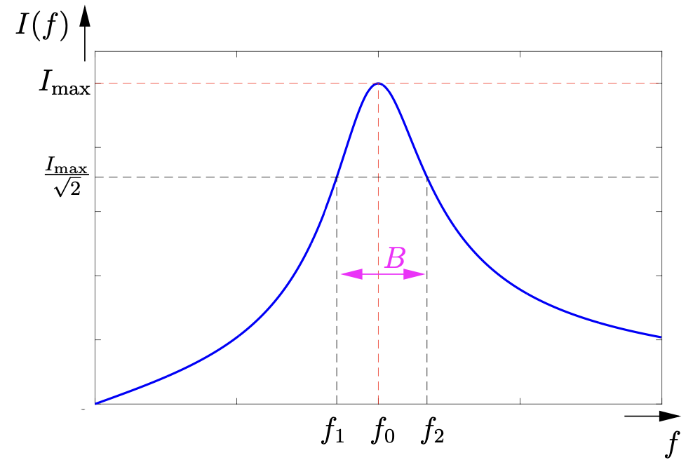
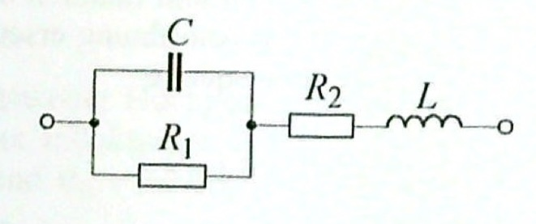
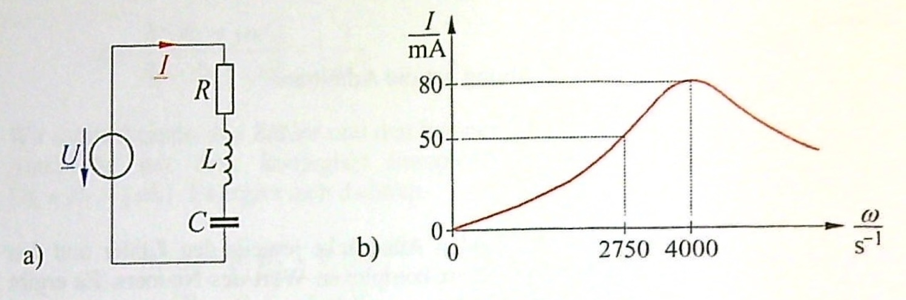

24 Schwingkreise
- Reihenschwingkreis
- Resonanzfrequenz
- Bandbreite und Güte
- Parallelschwingkreis
- Resonanzfrequenz
- Bandbreite und Güte
24.1 Schwingkreis
Wenn man in der Elektrotechnik von “Schwingen” redet, dann versteht man darunter den wiederholten, wechselseitigen Energieaustausch, der zwischen zwei oder mehr Speichern passieren kann. Die Speicher sind für verschiedene Energieformen und wenn man in Form von Schaltelementen denkt, dann entsteht diese Speicherung durch elektrische und magnetische Felder. Zwei Bauteile, die bereits eingeführt wurden, die elektrische oder magnetische Felder aufbauen, sind die Kapazität C und die Induktivität L.
Da Kapazität und Induktivität nur als reale Bauteile, also als Kondensator und Spule, auftreten, kommt noch der Wirkwiderstand R hinzu. Diese Bauteile können in Form eines Reihenschwingkreises oder Parallelschwingkreises angeordnet sein.
24.2 Reihenschwingkreis

Entn. aus (Schenke 2023)
Es muss eine Kreisfrequenz geben, bei der diese Schaltung den maximalen Strom leitet. Aus dem Ohmschen Gesetzt weiß man, dass der Strom maximal ist, wenn der Widerstand (in diesem Fall die Impedanz) minimal ist.
\[\underline{Z} = R + j\omega L + \frac{1}{j\omega C} = R + j\left(\omega L - \frac{1}{\omega C}\right)\]
24.2.1 Resonanzfrequenz
Gibt es eine Frequenz, die dafür sorgt, dass der Imaginärteil der Impedanz zu null wird?
\[Im(\underline{Z}) = 0\]
\[\omega L = \frac{1}{\omega C}\]
\[\omega_0 = \frac{1}{\sqrt{LC}} = 2\pi \cdot f_0\]
\(f_0\) wird Resonanzfrequenz genannt, bei ihr ist der Strom maximal und es wird die maximale Leistung umgesetzt:
\[P_{max} = I_{max}^2 \cdot R\]
24.2.2 Bandbreite und Güte
Bei den “Grenzfrequenzen” des Schwingkreises wird die Hälfte der Leistung aufgenommen, also:
\[P_{1,2} = \frac{I_{max}^2 \cdot R}{2}\]
\[I_{1,2} = \frac{I_{max}}{\sqrt{2}}\]
Der Abstand zwischen den Grenzfrequenzen nennt man die Bandbreite B.
\[B = f_2 - f_1 = \frac{R}{2\pi \cdot L}\]
Über die Bandbreite kann auch die Güte Q des Schwingkreises angegeben werden.
\[Q = \frac{f_0}{B} = \frac{1}{R}\sqrt{\frac{L}{C}}\]

Entn. aus (Schenke 2023)
24.3 Parallelschwingkreis

Entn. aus (Schenke 2023)
Es muss eine Kreisfrequenz geben, bei der diese Schaltung die maximale Spannung hat. Aus dem Ohmschen Gesetzt weiß man, dass die Spannung maximal ist, wenn der Widerstand (in diesem Fall die Impedanz) maximal ist. Alternativ kann man sich auch die Admittanz ansehen, die müsste jedoch dann minimal werden.
\[\underline{Y} = \frac{1}{R} + j\omega C + \frac{1}{j\omega L} = \frac{1}{R} + j\left(\omega C - \frac{1}{\omega L}\right)\]
24.3.1 Resonanzfrequenz
Gibt es eine Frequenz, die dafür sorgt, dass der Imaginärteil der Admittanz zu null wird?
\[Im(\underline{Y}) = 0\]
\[\omega C = \frac{1}{\omega L}\]
\[\omega_0 = \frac{1}{\sqrt{LC}} = 2\pi \cdot f_0\]
\(f_0\) wird Resonanzfrequenz genannt, bei ihr ist die Spannung maximal und es wird die maximale Leistung umgesetzt:
\[P_{max} = \frac{U_{max}^2}{R}\]
24.3.2 Bandbreite und Güte
Bei den “Grenzfrequenzen” des Schwingkreises wird die Hälfte der Leistung aufgenommen, also:
\[P_{1,2} = \frac{U_{max}^2}{2R}\]
\[U_{1,2} = \frac{U_{max}}{\sqrt{2}}\]
Der Abstand zwischen den Grenzfrequenzen nennt man die Bandbreite B.
\[B = f_2 - f_1 = \frac{1}{2\pi \cdot RC}\]
Über die Bandbreite kann auch die Güte Q des Schwingkreises angegeben werden.
\[Q = \frac{f_0}{B} = \frac{1}{G}\sqrt{\frac{C}{L}}\]
24.4 Übungen
24.4.1 Übung 9.1
(Hagmann Aufgabe 10.1)
Der im Bild dargestellte Reihenschwingkreis enthält die Wirkwiderstände \(R_1 = 400\,\Omega\) und \(R_2 = 100\,\Omega\) sowie eine Spule mit der Induktivität \(L = 32\,mH\) und einen Kondensator mit der Kapazität \(C = 1\,\mu F\).
Wie groß ist die Resonanzfrequenz \(f_r\) der Schaltung?
Welchen Widerstand \(Z_r\) hat die Schaltung im Resonanzzustand?

Entn. aus (Hagmann 2019)
Impedanz der Schaltung:
\[\underline{Z} = \frac{1}{\frac{1}{R_1} + j\omega C} + R_2 + j\omega L\]
Konjugiert-Komplex erweitern und umstellen nach Real- und Imaginärteil:
\[\underline{Z} = R_2 + \frac{\frac{1}{R_1}}{\left( \frac{1}{R_1} \right)^2 + (\omega C)^2} + j \left( \omega L -\frac{\omega C}{\left( \frac{1}{R_1} \right)^2 + (\omega C)^2} \right)\]
Resonanzbedingung \(Im(\underline{Z}) = 0\):
\[\omega L -\frac{\omega C}{\left( \frac{1}{R_1} \right)^2 + (\omega C)^2} = 0\]
\[\omega_r = \sqrt{\frac{1}{LC} - \left( \frac{1}{R_1 C} \right)^2} = \sqrt{\frac{1}{32\,mH \cdot 1\,\mu F} - \left( \frac{1}{400\,\Omega \cdot 1\,\mu F} \right)^2} = 5000 \frac{1}{s}\]
\[ f_r = \frac{\omega_r}{2\pi} = \frac{5000 s^{-1}}{2\pi} = 796\,Hz \]
Resonanzschaltung \(Im(\underline{Z}) = 0\):
\[ Z_r = Re(\underline{Z}) = R_2 + \frac{\frac{1}{R_1}}{\left( \frac{1}{R_1} \right)^2 + (\omega C)^2} = 100\,\Omega + \frac{\frac{1}{400\,\Omega}}{\left( \frac{1}{400\,\Omega} \right)^2 + \left( 5000 s^{-1} \cdot 1\,\mu F \right)^2} = 180\,\Omega \]
24.4.2 Übung 9.2
(Hagmann Augabe 10.2)
Der im Bild dargestellte Parallelschwingkreis enthält den Wirkwiderstand \(R = 20\,\Omega\) und eine Spule mit der Induktivität \(L = 10\,mH\). Die Kapazität \(C\) des vorhandenen Kondensators soll so gewählt werden, das sich die Schaltung im Resonanzzustand befindet. Die Versorgungsspannung beträgt \(U = 20\,V\). Sie hat die Frequenz \(f = 800\,Hz\).
Welche Kapazität \(C\) muss der Kondensator haben?
Wie groß ist hierbei der von der Spannungsquelle gelieferte Strom \(I\)?

Entn. aus (Hagmann 2019)
Admittanz der Schaltung:
\[\underline{Y} = \frac{1}{R + j\omega L} + j\omega C\]
Konjugiert-komplex erweitern und nach Real- und Imaginärteil umstellen:
\[\underline{Y} = \frac{R}{R^2 + (\omega L)^2} + j\left( \omega C - \frac{\omega L}{R^2 + (\omega L)^2} \right)\]
Resonanzbedingung \(Im(\underline{Y})\):
\[\omega C = \frac{\omega L}{R^2 + (\omega L)^2}\]
\[C = \frac{L}{R^2 + (\omega L)^2} = \frac{10\,mH}{(20\,\Omega)^2 + (2\pi \cdot 800\,Hz \cdot 10\,mH)^2} = 3,42\,\mu F\]
Resonanzzustand \(Im(\underline{Y}) = 0\):
\[Y_r = \frac{R}{R^2 + (\omega L)^2} = \frac{20\,\Omega}{(20\,\Omega)^2 + (2\pi \cdot 800\,Hz \cdot 10\,mH)^2} = 6,83\,mS\]
\[I = U \cdot Y_r = 20\,V \cdot 6,83\,mS = 137\,mA\]
24.4.3 Übung 9.3
(Hagmann Aufgabe 10.5)
Der im Bild (a) dargestellte Reihenschwingkreis liegt an einer Wechselspannung von \(U = 60\,V\) mit veränderbarer Frequenz. Von der Schaltung ist die in Bild (b) angegebene Resonanzkurve bekannt. Hierbei stellen \(I\) den im Kreis fließenden Strom und \(\omega\) die Kreisfrequenz der Wechselspannung dar.
Welche Werte haben der Wirkwiderstand \(R\), die Induktivität \(L\) und die Kapazität \(C\) der Schaltung?

Entn. aus (Hagmann 2019)
im Resonanzzustand:
\[\omega = \omega_r = 4000\,s^{-1}\]
\[I = I_r = 80\,mA\]
daraus ergibt sich der Wirkwiderstand:
\[R = \frac{U}{I_r} = \frac{60\,V}{80\,mA} = 750\,\Omega\]
Scheinwiderstand bei \(\omega_1 = 2750\,s^{-1}\):
\[Z_1 = \frac{U}{I_1} = \frac{60\,V}{50\,mA} = 1200\,\Omega\]
außerdem gilt:
\[Z_1^2 = R^2 + \left( \omega_1 L - \frac{1}{\omega_1 C} \right)^2\]
\[\omega_r L = \frac{1}{\omega_r C}\]
Gl. Nr.2 nach C auflösen und in Gl. Nr.1 einsetzen:
\[Z_1^2 = R^2 + \left( \omega_1 L - \frac{\omega_r^2}{\omega_1} L \right)^2\]
\[L = \frac{\pm \sqrt{Z_1^2 - R^2}}{\omega_1 - \frac{\omega_r^2}{\omega_1}} = \frac{\pm \sqrt{1200^2 - 750^2}\,\Omega}{\left(2750 - \frac{4000^2}{2750} \right)\,s^{-1}} = \pm 305\,mH\]
\[L = 305\,mH\]
\[C = \frac{1}{\omega_r^2 L} = \frac{1}{\left( 4000 s^{-1} \right)^2 \cdot 305\,mH} = 205\,nF\]